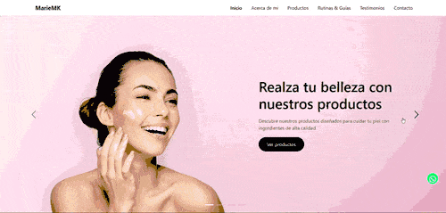
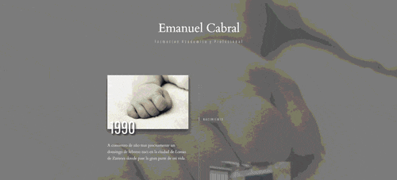

STACK
Mis Tecnologías
Herramientas que utilizo para crear soluciones modernas
Un poco sobre quién soy y lo que hago
Soy desarrollador web, AI Engineer y profesor de tecnología con más de 10 años de experiencia en el ámbito digital y más de 5 años formando profesionales. Actualmente doy clases en Coderhouse, donde enseño Inteligencia Artificial, Python, Desarrollo Web, WordPress y No-Code.
Soy creador de cursos de Frontend, Inteligencia Artificial y Python, y me especializo en la creación de contenido educativo, incluyendo presentaciones, videos, PDFs y desafíos prácticos.
Trabajo con tecnologías como HTML, CSS, SASS, Bootstrap, JavaScript, Python y SQL, además de herramientas como Git y GitHub. También tengo experiencia en bases de datos (MySQL y PostgreSQL) y en diseño digital, lo que me permite abordar proyectos de forma integral.
Me especializo en inteligencia artificial, especialmente en modelos generativos, machine learning y aplicaciones prácticas en distintos formatos, desarrollando soluciones aplicadas a problemas reales y acompañando a estudiantes en su preparación para el mundo laboral.
Ver mis proyectosHerramientas que utilizo para crear soluciones modernas
Algunos de los proyectos que he desarrollado

Sitio web para una PYME financiera, desarrollado con tecnologías web estándar y recursos multimedia. El objetivo es ofrecer una plataforma clara, adaptable y profesional para la presentación de servicios financieros.
Ver Proyecto
ConciencIA Digital es un blog de noticias sobre Inteligencia Artificial que comparte novedades, avances y temas clave del sector, incluyendo su impacto en la sociedad, oportunidades y desafíos.
Ver ProyectoKinesiología GG es un sitio web profesional donde el kinesiólogo se presenta y muestra sus servicios, experiencia y enfoque de trabajo en la rehabilitación y el cuidado del movimiento humano.
Ver Proyecto
Marie MaryKay, un proyecto web creado para una asesora de imagen y belleza que busca darse a conocer y compartir su propuesta de valor de manera clara, elegante y profesional.
Ver Proyecto
Es una web orientada a la promoción y venta de servicios de desarrollo web, diseñada como landing page para presentar ofertas, captar clientes y facilitar el contacto comercial.
Ver Proyecto
Timeline Profesional es una página web que presenta una línea de tiempo interactiva del recorrido profesional, desarrollada con HTML, CSS y JavaScript.
Ver ProyectoOpiniones de clientes y colegas
“Excelente profesional, entregó el proyecto antes de tiempo y con una calidad impresionante. Comunicación clara y resultados impecables.”

“Excelente experiencia trabajar con Emanuel, fui parte del equipo en Coderhouse en el que se desempeño como profesor cumpliendo a la perfección el rol”

“Emanuel fue mi primer profesor en Numen Academy, con él asenté las bases de frontend. Sus clases fueron excelentes, aprendí de manera didáctica y dinámica conceptos de HTML, CSS, Flexbox, Grid, animaciones y Bootstrap, ademas de compartirnos herramientas para usar en los proyectos. Siempre estuvo predispuesto a resolver dudas propias y del grupo, como así también en darnos un freedback constructivo ante los trabajos prácticos propuestos. Excelente docente. Uno de los motivos por que recomiendo Numen Academy. Siempre agradecido.”

“Hola profesor, ante todo darle las GRACIAS por tan buenas clases. La verdad que ha sido uno de los mejores profesores que me ha tocado en Coder, estoy muy contenta con los avances que he visto en mi y ha sido en gran parte por la calidad de su enseñanza. Se nota que le gusta transmitir sus conocimientos y tiene mucha paciencia. Estoy muy agradecida. Espero que me toque en otro curso :)”
“Excelente el profesor. Te mantiene entretenido y prestando atención en clase. Le mete mucha onda, lo que te permite que si estas cansado por el horario no te pierdas.”
“Muy buen profesor ! Es la tercera vez que curso este curso y al primero que le entiendo!”
“Me encantó. Dejé de cursar por un tiempo en Coder, pero nunca tuve una clase tan dinámica y bien explicada. ¡Excelente trabajo!”
“La verdad que Emanuel es un genio y gran profe se preocupa por que entendamos”
Experiencia laboral y formación académica
En Humanversum, dicto el curso de Inteligencia Artificial, impartiendo conceptos teóricos y prácticos, manejo de modelos generativos y aplicación de herramientas para crear contenido en múltiples formatos, fomentando la innovación y el pensamiento crítico.
2024 - 2024Univeridad Nacional de Tres de Febrero
2024Docente de Inteligencia Artificial con enfoque teórico-práctico. Abordo la historia de la IA, machine learning, deep learning, redes neuronales, modelos generativos (GPT, GANs, Diffusion), ética en IA y aplicaciones prácticas. Trabajo con herramientas para generar texto, imágenes, audio, video, código y más, aplicando IA en contextos reales y multidisciplinarios.
2023 - ActualidadComo docente de Python, imparto clases desde nivel inicial con un enfoque práctico y progresivo. Acompaño a los estudiantes en la construcción de una base sólida en lógica de programación, incluyendo variables, estructuras condicionales, bucles, funciones (simples y recursivas), y colecciones de datos como listas, diccionarios y tuplas. Avanzamos hacia conceptos intermedios y avanzados como la programación orientada a objetos (POO), el desarrollo de scripts, la creación y reutilización de módulos y paquetes, así como la distribución de proyectos. También abordo el manejo de archivos, incluyendo la lectura y edición de formatos como CSV, TXT y JSON. Además, enseño el uso de herramientas esenciales para el desarrollo profesional como Git y GitHub, aplicando buenas prácticas de versionado y colaboración. Mi objetivo es que los alumnos puedan aplicar Python para resolver problemas reales, automatizar tareas, y desarrollar bases para proyectos más complejos.
2023 - ActualidadComo docente de WordPress, enseño a los estudiantes a crear y administrar sitios web profesionales sin necesidad de programar, utilizando temas, plugins y constructores visuales como Elementor. Abordo el proceso completo desde la instalación hasta la publicación, incluyendo configuración de dominios, hosting, seguridad, personalización del diseño, optimización y nociones de SEO. También enseño el uso de WooCommerce para la creación de tiendas online, gestión de productos, métodos de pago y experiencia del usuario. Fomento buenas prácticas y autonomía en la creación de sitios adaptados a distintos perfiles y necesidades.
2023 - ActualidadEnseño a usar Bubble para crear aplicaciones web sin necesidad de programar, enfocándome en el diseño visual, bases de datos, workflows y despliegue de proyectos funcionales.
2023 - ActualidadEnseño programación inicial, desarrollando material educativo y dictando clases enfocadas en lógica de programación, manejo de PSeInt, Python, Git, GitHub, bases de datos y SQL, orientando a los estudiantes hacia la resolución práctica de problemas.
2022 - 2023Como docente de Desarrollo Web, enseño desde los fundamentos del diseño y la estructura de sitios web hasta la implementación de proyectos funcionales y responsivos. Trabajo con tecnologías clave como HTML, CSS, SASS, Bootstrap, Flexbox, Grid, y el uso de Git y GitHub para el control de versiones y la colaboración en equipo. Guío a los estudiantes a través de buenas prácticas de maquetado, accesibilidad, estructura semántica, optimización para SEO y adaptabilidad a múltiples dispositivos. También abordo la conexión con servidores, despliegue de sitios web y flujo de trabajo profesional. Además de dictar clases y acompañar a tutores, realizo las correcciones de los trabajos integradores, donde los estudiantes desarrollan un sitio web completo aplicando los conocimientos adquiridos. También creo materiales educativos como presentaciones, PDFs, videos y desafíos prácticos, siempre orientados a que los estudiantes desarrollen autonomía y preparación para el entorno laboral real.
2021 - ActualidadUniversidad de la Matanza
2020 - 2022En Numen Academia, imparto clases online de desarrollo web, enseñando HTML, CSS, SASS, Bootstrap, Git y GitHub. Creo materiales didácticos completos como presentaciones, videos y PDFs, superviso tutores y realizo la corrección de tareas para asegurar el aprendizaje y la práctica efectiva. Creador del curso Frontend
2020 - 2023Centro de formación Profesional 404
2020Centro de formación Profesional 404
2020Centro de formación Profesional 404
2019Centro de formación Profesional 404
2019Enseño a maquetar sitios webs con las tecnologias de html y css desde cero
2018 - 2021Centro de formación Profesional 402
2018Centro de formación Profesional 402
2018HTML, CSS, JavaScript, React, PHP, MySQL y deployment.
2018Brindo soporte técnico en armado y reparación de PC, instalación y mantenimiento de sistemas operativos, restauración, antivirus, limpieza, gestión de programas, backups, y soporte remoto y presencial, asegurando el funcionamiento óptimo de los equipos. Venta de insumos tecnologicos
2016 - 2022Brindo soporte técnico en armado y reparación de PC, instalación y mantenimiento de sistemas operativos, restauración, antivirus, limpieza, gestión de programas, backups, y soporte remoto y presencial, asegurando el funcionamiento óptimo de los equipos. Venta de insumos tecnologicos
2016 - 2022OM Personal / EFset
2012Instituto de Formación Técnica y Docente N° 172
2012 - 2014Algunos números que representan mi recorrido profesional